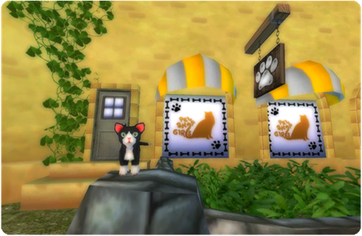

Interjú Hanna grafikusművésszel!
Helló!
Íme a második interjú, amelyben Hanna bővebben mesél a holnap megjelenő háziállatokról!
Helló, Hanna! Mesélj nekünk egy kicsit magadról és arról, hogy mit csinálsz a Star Stable-nél.
Grafikus vagyok a Star Stable-nél, és mindent tudok a háziállatokról!
Hogyan lehet háziállat-tulajdonosnak lenni a Star Stable-ben?
Először is kapsz egy küldetést a lánytól, aki nyeregtáskákat árul Pinta Erődben. Csak miután beszéltél vele, mehetsz be a háziállat-üzletbe, a Pet Shop Girls-be, amely mellette található.

Szuper! Mindenki szerezhet magának háziállatot?
Persze. Amint beléphetsz Pinta Erődbe (kb. a 4. szinttől), bemehetsz az állatkereskedésbe. Ott különböző háziállatok közül válogathatsz, és mindegyikük kalandra vágyik!
Kalandra? Hogy érted ezt?
Nos, Jorvik összes kis állata imád lovagolni. Ahhoz, hogy ezt megtehessék, szükséged van egy nyeregtáskára, amiben a háziállatod utazik. Ne felejtsd el, hogy a lovadon is legyen nyereg, hogy a háziállatod látható legyen!
Le lehet venni a nyeregtáskát és a háziállatot a lóról?
Igen, lehet. Ugyanúgy működik, mint a lábszárvédők és a díszek. Nyisd meg a karakterlapodat, és onnan hozzáadhatod vagy eltávolíthatod a háziállatodat és a nyeregtáskádat.

Lehet több háziállatod is?
Igen, annyit tarthatsz, amennyit csak akarsz. De a nyeregtáskában egyszerre csak egy háziállatot vihetsz magaddal. A többieknek addig az istállód takarmánytárolójában kell várniuk.
Köszönjük, Hanna, hogy többet meséltél nekünk a háziállatokról!
Köszönjük, reméljük, hogy mindenki annyira megszereti a háziállatokat, mint mi!